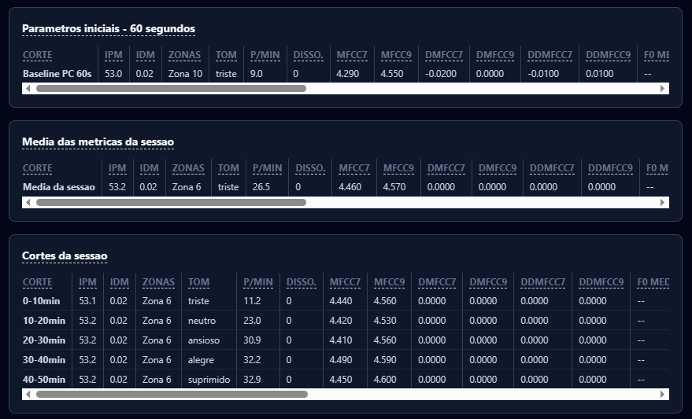
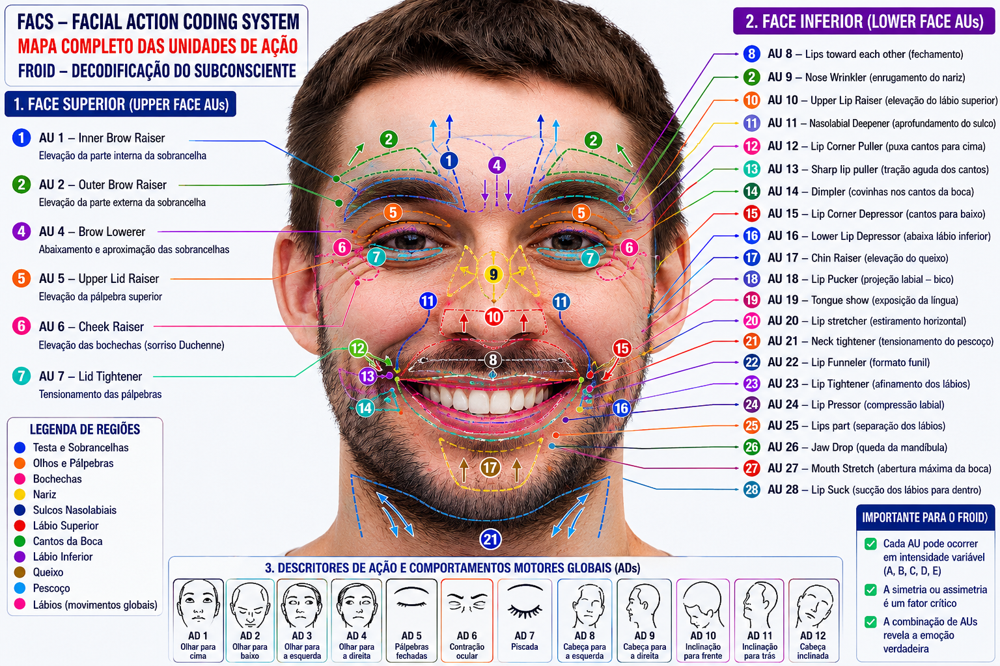
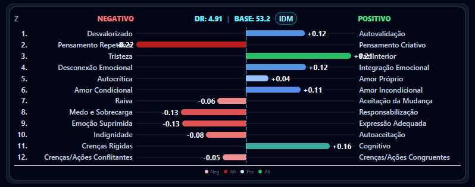

Technologie
De la capture audio brute jusqu'à la lecture visuelle des 12 Zones — ce qui relève du traitement de signal standard, ce qui relève du cadre propriétaire, et où s'arrête chacun.
Étape 1
Chaque séance commence par 60 secondes d'étalonnage. Pendant cet intervalle, le système établit la moyenne et la variabilité de la fréquence fondamentale (F0) du patient au repos, cartographie le profil de bruit de l'environnement et du microphone, et verrouille (baseline_locked) les valeurs de référence utilisées pour toutes les comparaisons de la séance.
Cela existe parce que l'analyse acoustique absolue n'a pas de sens clinique : une voix naturellement grave ne peut pas être confondue avec un ralentissement psychomoteur, et une voix aiguë ne peut pas être lue comme une hyperactivation. Chaque patient est comparé uniquement à lui-même.

F0 de base (moyenne et écart-type), densité spectrale de puissance par bande (via FFT dans le navigateur — Web Audio API, aucune bibliothèque DSP côté backend), bruit de fond, et l'état initial des 468 points faciaux suivis.
État de séance implémenté comme une machine à états CALIBRATING → LIVE → ENDED, avec une action BASELINE_LOCK déclenchant le verrouillage des valeurs de référence (froid-dashboard/src/pages/LiveSession.tsx).
Étape 2
À chaque fenêtre d'analyse, FROID extrait un ensemble de caractéristiques vocales et compare chacune à la ligne de base verrouillée.
Coefficients cepstraux sur l'échelle de Mel et leurs dérivées (Δ, ΔΔ). Dans l'étude de référence, le MFCC7 sous contenu négatif est prédictif de l'échelle de dépression (β=0,90) et le MFCC9 est corrélé négativement à l'anxiété somatique de Hamilton (β=−0,45) — c'est pourquoi FROID lit le ΔΔMFCC9 comme un marqueur de l'accélération de la tension laryngée.
Fréquence fondamentale et taux de passage par zéro, extraits en continu et comparés à la variabilité de base.
Indices internes normalisés (et non les jitter% / shimmer dB cliniques classiques) dérivés d'un ZCR mis à l'échelle et du coefficient de variation de l'enveloppe RMS — ils signalent une instabilité vocale relative.
Dans le code de production (LiveSession.tsx), ces métriques sont explicitement étiquetées comme des proxys, avec une unité documentée :
Autrement dit : ils n'équivalent pas directement au jitter en % ou au shimmer en dB tels que définis par Boersma & Weenink (Praat). Ce sont des proxys dérivés, utilisés comme signal relatif d'instabilité — pas comme valeur clinique normative. Une extraction physique validée (équivalente à Praat) figure sur la feuille de route.
Des pics soutenus dans l'accélération de la dérivée Delta-Delta (ΔΔMFCC9 > 1,8) signalent des micro-contractions réflexes des cordes vocales et servent de déclencheur biophysique de friction somatoaffective. Le seuil de 1,8 est un paramètre d'ingénierie calibrable, pas une constante publiée.
Étape 3

468 points faciaux sont suivis par vision par ordinateur locale, classés en Unités d'Action (AU) selon le Facial Action Coding System, avec une modélisation temporelle de l'onset, de l'apex et de l'offset.
Lorsqu'une configuration faciale (ex. : AU12 sans AU6, ou AU23/AU24 soutenues) coïncide avec un écart acoustique pertinent dans une zone, le système applique un multiplicateur de dissonance à la lecture de cette zone.
Forme binaire appliquée en production lorsque le drapeau de dissonance faciale se déclenche. La valeur 2,5 est un paramètre produit FROID, non dérivé d'une étude publiée — à traiter comme une heuristique d'ingénierie calibrable, pas comme une constante scientifique. L'assemblage complet de l'IDM (moyenne des 12 zones × M_fac) et la forme continue du multiplicateur figurent à l'Étape 5.
L'hypothèse classique selon laquelle l'absence d'AU6 indique un sourire forcé bénéficie d'un soutien partiel dans la littérature, mais des recherches récentes la contestent directement, trouvant que l'AU6 est davantage liée à l'intensité du sourire qu'à l'authenticité émotionnelle. FROID utilise cette configuration comme l'un des multiples facteurs de dissonance, pas comme un détecteur de mensonge isolé.
Étape 4 · Cadre propriétaire
La couche visuelle et interprétative qui organise tous les signaux précédents en une carte circulaire de 12 zones, chacune associée à une dichotomie thématique clinique.

Une interface de visualisation propriétaire qui répartit l'énergie spectrale vocale sur 12 bandes, chacune accordée à une note de la gamme chromatique et associée par FROID à un thème clinique interprétatif (ex. : Zone 3 — « Tristesse vs. Paix intérieure »). La physique sous-jacente (densité spectrale de puissance via FFT) est réelle et mesurable.
Il n'existe aucune littérature évaluée par les pairs validant l'association spécifique entre une plage étroite de Hz et un thème psychologique. La structure est une transposition adaptée d'une technologie commerciale de biofeedback vocal. Nous le traitons explicitement comme une heuristique produit FROID.
Étape 5 · Cadre propriétaire
Le cerveau humain n'exécute pas de Transformées de Fourier ni ne suit 468 points faciaux à 30 IPS tout en maintenant l'alliance thérapeutique. FROID résout ce goulot d'étranglement par réduction de dimensionnalité : il fusionne voix, visage et sémantique en deux vecteurs qui tournent en continu sur le panneau de suivi.
Le « compteur de vitesse » de l'énergie biologique de la séance — quantifie, sur une échelle de 0 à 100, l'intensité expressive et la vitalité psychomotrice du patient à chaque seconde.
Combine l'amplitude et la variabilité de trois canaux : énergie acoustique et variabilité de F0 (voix), amplitude et vitesse de contraction des Unités d'Action (visage), et densité de termes à fort impact émotionnel détectés par NLP (sémantique). Un facteur de fiabilité dynamique par canal écarte les variations parasites, comme une toux ou un changement brusque de lumière dans la pièce.
Lecture clinique : une baisse soutenue indique une léthargie ou un ralentissement moteur dépressif ; des pics fréquents indiquent une hyperactivation, une agitation anxieuse ou une accélération des pensées.
La « boussole » qui indique la direction et la cohérence de cette énergie — évalue si les réactions du patient sont congruentes avec le contenu abordé ou s'il y a une rupture de symétrie révélant une résistance, une répression ou une somatisation.
Compare les lectures instantanées à la ligne de base individuelle verrouillée durant les 60 premières secondes. Lorsque le canal facial et le canal vocal se contredisent — contenu triste avec infra-tremblement vocal (5–12 Hz) mais sourire seulement volontaire (AU12 sans AU6) — applique le Multiplicateur Facial de Dissonance, déplaçant l'indice vers les couleurs d'alerte.
Lecture clinique : localise les « points chauds » émotionnels — révèle la Dissonance Somatoaffective (Fausse Calme), lorsque le stress a été réprimé du visage mais continue de tendre le larynx.
σ est la sigmoïde qui compresse le résultat entre 0 et 100. |zᵢ(t)| est l'amplitude de l'écart standardisé (z-score) du canal par rapport à la base de 60 s ; rᵢ(t) ∈ [0,1] est la fiabilité dynamique du canal ; wᵢ sont les poids calibrés par ingénierie de la phonation pour équilibrer chaque capteur.
Au repos ou en congruence, M_fac = 1,0. Au seuil maximal de dissonance (sourire social pur, sans contraction orbitale, Conf_apex ≥ 0,75) le multiplicateur atteint le plafond de 2,5. La production actuelle applique la forme binaire de ce multiplicateur (2,5 lorsque le drapeau de dissonance se déclenche, 1,0 sinon — voir Étape 3) ; l'expression continue ci-dessus est le modèle de référence. Implémenté dans froid-engine.ts → calculateIDM().
Honnêteté d'ingénierie : les poids, les coefficients de fusion et le 2,5 lui-même sont des paramètres produit affinés en laboratoire — des hypothèses cliniques qualifiées, pas des constantes scientifiques publiées. La validation populationnelle définitive dépend du Data-Froid anonyme (k-anonymat + hachages à sens unique). Voir le cadrage dans Science.
Étape 6 · Cadre propriétaire
Lors des tests avec des professionnels, un écran qui change toutes les quelques secondes s'est révélé trop rapide pour évaluer toutes les métriques avec calme clinique. La réponse de FROID : le traitement brut continue en haute résolution (cadence d'1 seconde), mais la présentation visuelle est stabilisée dans une fenêtre clinique configurable — sans gel et sans perte de précision.
Toutes les 1 minute, FROID clôture une micro-fenêtre technique. L'écran affiche une fenêtre clinique glissante de 5 minutes, composée des 5 dernières micro-fenêtres — consolidées par moyenne pondérée temporelle, jamais par une moyenne simple : la minute en cours pèse plus que les précédentes.
Le professionnel voit de la stabilité, mais FROID continue de réagir progressivement à ce qui se passe maintenant.
Temps réel — sans gel visuel
1 minute — fenêtre clinique légère
3 minutes — supervision dynamique
5 minutes — réglage recommandé
7 minutes — séance plus lente/réflexive
« Temps réel » signifie que les graphiques et indicateurs suivent la cadence technique disponible (≈1s/10s selon l'origine de la métrique) — ce n'est pas du temps réel absolu de laboratoire, mais l'absence de gel clinique de l'écran.
Le panneau affiche Fenêtre clinique : 5min et le compte à rebours Prochaine mise à jour dans 03:42, avec le bouton Mettre à jour maintenant toujours disponible.
Exception de sécurité : une alerte critique rompt la stabilisation et met à jour l'écran immédiatement, avant l'échéance.
m_k est la valeur consolidée de la micro-fenêtre technique k (1 minute). Le traitement brut suit la cadence d'1 seconde ; seule la couche de présentation est stabilisée.
Référence propriétaire : FROID_Estabilizacao_Clinica_Da_Tela.md — documente la métrique, les mathématiques et le raisonnement clinique, et intègre la base de connaissances consultée par FROID Explique. Les segments sémantiques de la séance ne sont pas affectés par ce module.